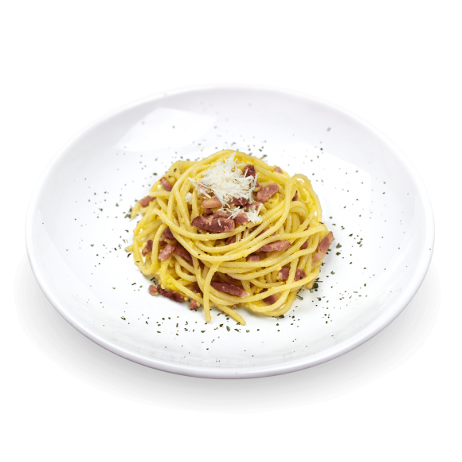

Spaghetti Carbonara

Description
Spaghetti Carbonara, one of the most famous Pasta Recipes of Roman Cuisine, is made only with 5 simple ingredients:
spaghetti seasoned with browned guanciale, black pepper, pecorino Romano and beaten eggs.
In the authentic Italian recipe for carbonara, the ingredients are very few and of excellent quality.
The high quality of ingredients is a necessary condition for the success of this recipe.
Ingredients
- 350 grams of spaghetti
- 200g of guanciale
- 4 whole medium eggs
- 100g of grated ,,Pecorino Romano" cheese
- ground black pepper
Steps
- Cook the Spaghetti: Bring a large pot of salted water to a boil. Add 350 g (12 oz) of spaghetti and cook according to package instructions until al dente.
Reserve 1 cup of pasta water before draining.
- Prepare the Guanciale: While the pasta is cooking, cut 200 g (7 oz) of guanciale into small cubes.
In a large skillet over medium heat, cook the guanciale until crispy, about 5-7 minutes. Remove from heat and set aside.
- Mix the Egg and Cheese: In a bowl, whisk together 4 whole medium eggs and 100 g (1 cup + 1 tablespoon) of grated Pecorino Romano cheese until well combined.
- Combine Pasta and Guanciale: Add the drained spaghetti to the skillet with the guanciale (off the heat). Toss to coat the pasta in the rendered fat.
- Add the Egg Mixture: Slowly pour the egg and cheese mixture over the hot pasta, tossing quickly to create a creamy sauce.
Add a little reserved pasta water if needed to achieve your desired consistency.
- Season and Serve: Season with ground black pepper to taste.
Serve immediately, garnished with extra Pecorino Romano and more black pepper if desired. Enjoy your delicious spaghetti carbonara!
Check our other recipes
Guacamole
Scrambled eggs
Back to home page